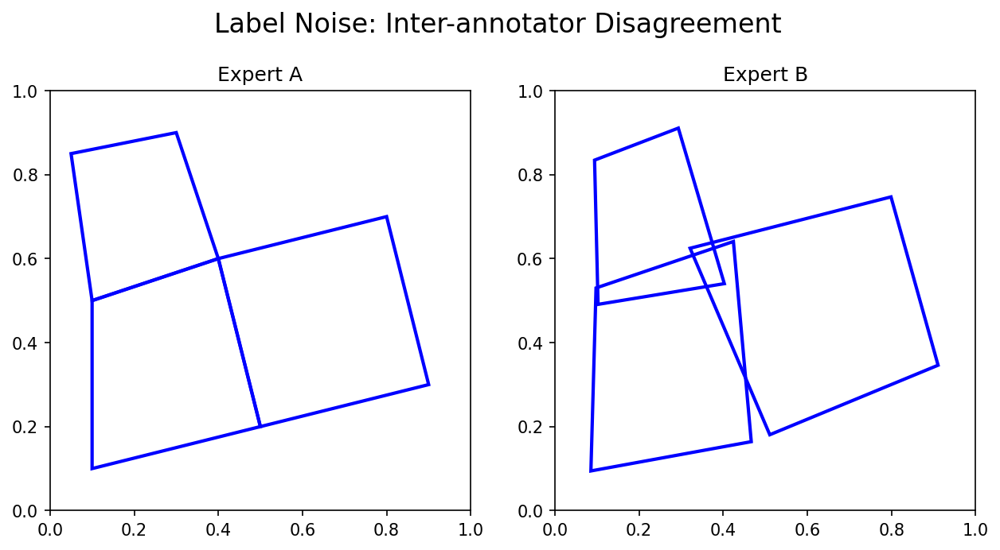
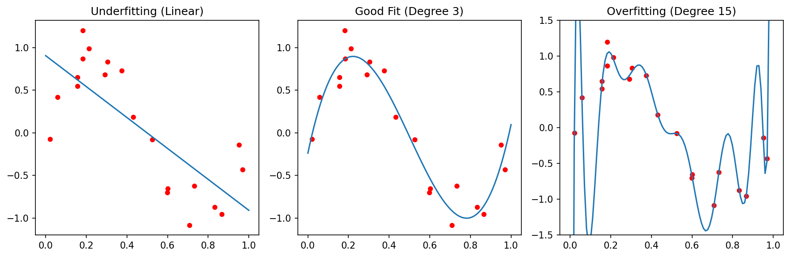

Machine Learning in Materials Processing & Characterization
Unit 3: Data Quality, Preprocessing, and Robust Validation
Prof. Dr. Philipp Pelz
FAU Erlangen-Nürnberg


01. The Quality Crisis in Scientific ML
- Garbage In, Garbage Out: An algorithm is only as good as the data it sees
- In materials science, data is expensive — so we tend to use everything, even the “garbage”
- The Reproducibility Crisis: Many published models fail on new samples
Note
Unit 3 focuses on everything that happens before and after modeling — the steps most often skipped.
02. Learning Outcomes
By the end of this unit, you can:
- Design a systematic data cleaning pipeline for lab data
- Choose appropriate scaling/normalization for different feature types
- Identify and prevent the three types of data leakage
- Apply K-fold and grouped cross-validation correctly
- Select appropriate error metrics for regression and classification
- Evaluate model reliability beyond simple accuracy
03. The ML Workflow: Where Are We?
Today we focus on the gold boxes: Preprocessing and Evaluation.
These are where 80% of the work happens — and where 80% of the mistakes hide.
04. The Role of Preprocessing
Transforming raw, potentially messy data into a structured format suitable for algorithms:
- Raw sensor readings → clean feature matrix
- Inconsistent units → standardized scales
- Missing values → complete records (or honest gaps)
- Artifacts → detected and documented
Part 1: Data Cleaning
Slides 05–11
05. Common Data Issues
- Structural problems: Typos in labels, mixed units (mm vs. µm), inconsistent naming
- Duplicates: Same measurement recorded twice — inflates dataset and biases training
- Irrelevant observations: Test runs, calibration samples left in the dataset
- Missing values (NaNs): Sensor failure, transmission drops, out-of-range readings
- Outliers: Extreme values — physical or artifactual?
06. Missing Values: Sources and Detection
Why data goes missing:
- Sensor failure during measurement
- Transmission dropout (wireless sensors)
- “Out of range” readings clipped by the instrument
- Operator error (forgot to record a parameter)
Detection: df.isnull().sum() in Pandas — always the first thing to check.
07. Handling Missing Values
Fix at source (ideal):
- Repair the sensor
- Re-run the measurement
- Check the raw data files
Digital repair (if source fix impossible):
- Deletion: Remove rows/columns (wasteful for small data)
- Interpolation: Linear, spline for time-series
- Imputation: Mean/median (dangerous for multi-modal data)
- Physics-based: Fill using conservation laws
Numerical markers: Using “impossible” values (e.g., -1000°C) to track NaNs without losing record count.
08. Outlier Detection
Three types of outliers:
- Point (global): A single value far from the distribution (e.g., hardness = 5000 HV)
- Contextual: Normal globally but unusual in context (e.g., 200°C during a room-temperature test)
- Collective: A group that behaves differently from the rest (e.g., an entire batch with drift)
09. Think About This: To Remove or Not?
Scenario: You find a hardness value 3× higher than all others in your dataset.
- Remove it — it’s clearly an error
- Keep it — it might be real (e.g., a hard precipitate)
- Investigate — check the measurement log before deciding
Answer: Always (C). Is it a cosmic ray on the detector? A typo? Or a rare but real physical event (crack initiation, phase transformation)?
Removing real outliers destroys the most interesting data points.
10. Duplicate Tracking
- Redundant data points bias training (over-weighting certain conditions)
- Duplicates between train and test sets cause leakage
- Sources: Copy-paste errors, merging overlapping databases, augmentation artifacts
11. The Systematic Cleaning Pipeline
- Detection: Identify outliers, NaNs, duplicates, structural issues
- Diagnosis: Is the issue physical or artifactual? Check the measurement log
- Treatment: Delete, cap, impute, or flag — with justification
- Documentation: Always report how much data was altered!
Note
If you remove 20% of your data without documenting why, your results are not reproducible.
Part 2: Data Transformation and Scaling
Slides 12–20
12. Why Transform Data?
- Linearize trends: Log-transform for exponential relationships
- Align features: Temperature in [20, 1200] vs. composition in [0.01, 0.5]
- Equal weighting: Algorithms using distance (kNN, SVM) need comparable scales
- Numerical stability: Very large or very small values cause floating-point issues
13. Centering and Shifting
- Mean centering: \(x' = x - \bar{x}\) (center at zero)
- Required for covariance-based methods (PCA, correlation analysis)
- Peak alignment: Shifting spectra so that a reference peak is at position zero
Centering changes the origin but not the shape or spread of the distribution.
14. Min-Max Scaling
\[x' = \frac{x - x_{\min}}{x_{\max} - x_{\min}} \in [0, 1]\]
- Maps all features to the same range
- Weakness: Sensitive to outliers — one extreme value stretches the entire scale
Good for: Neural network inputs (bounded activations like sigmoid expect [0,1]).
Bad for: Noisy lab data with occasional extreme values.
15. Standardization (Z-score)
\[x' = \frac{x - \mu}{\sigma}\]
- Mean = 0, Standard deviation = 1
- Robust to differences in feature magnitude
- The default choice for most ML algorithms
16. Robust Scaler
\[x' = \frac{x - \text{median}}{\text{IQR}}\]
- Uses median and interquartile range instead of mean and std
- Best for noisy lab data: Outliers don’t distort the scaling
- Available as
sklearn.preprocessing.RobustScaler
17. Log-Transforms
- Useful for variables spanning several orders of magnitude:
- Grain sizes: 0.1 µm to 1000 µm
- Dislocation densities: \(10^6\) to \(10^{15}\) m\(^{-2}\)
- Linearizes exponential trends → simpler models work better
Caution: Log-transform requires strictly positive values. Check for zeros first!
18. Frequency Domain: FFT
- Fast Fourier Transform: Convert time-domain → frequency-domain
- Detect oscillations, periodicity, and characteristic frequencies
- Materials example: Vibration analysis during milling → tool wear detection

19. Wavelet Transforms: Time-Frequency Analysis
- FFT loses when frequencies occur — Wavelets keep both time and frequency
- Localizing features that are both temporal and periodic
- Materials example: Acoustic emission during crack propagation — the frequency signature changes over time
20. Triggering: Isolating Relevant Sequences
- Long time series often contain mostly irrelevant data
- Triggering: Automatically extracting relevant windows
- Example: Isolating loading cycles from a continuous fatigue test
- Example: Extracting melting events from a continuous temperature log
Critical rule for all transformations: Scalers and transforms must be “fit” on training data only and “applied” to test data. Otherwise: preprocessing leakage.
Part 3: Labeling and Uncertainty
Slides 21–24
21. The Annotation Problem
- Who provides the “Ground Truth”?
- In microscopy, labeling is manual and tedious: drawing grain boundaries, identifying phases, marking defects
- Label uncertainty: If two experts disagree, which one is “right”?

22. Inter-Annotator Variance
- Different experts segment the same micrograph differently
- This variance sets an upper bound on meaningful model performance
- If humans only agree 85% of the time, a model claiming 99% accuracy is likely overfitting to one person’s bias
Best practice: Have multiple annotators. Report the inter-annotator agreement. Your model should aim for human-level performance, not perfect accuracy.
23. Quantifying Label Uncertainty
- Models shouldn’t just output a label — they should output confidence
- Softmax probabilities: \(P(\text{Phase} = \text{FCC}) = 0.82\)
- Confidence < 0.6? The model is uncertain — flag for expert review
The Bayesian perspective: treat model parameters as distributions, not point estimates. Prior + Likelihood = Posterior.
24. Active Learning: Smart Annotation
- Instead of labeling everything, the model asks: “Label this specific image because I am most uncertain about it”
- Reduces manual burden while focusing on the “hard” physical cases
Part 4: Robust Validation and Model Selection
Slides 25–37
25. Overfitting vs. Underfitting
Underfitting (High Bias):
- Model is too simple
- Fails to capture the trend
- High error on both train and test
Overfitting (High Variance):
- Model is too complex
- Memorizes noise as if it were signal
- Low train error, high test error

26. The Bias-Variance Tradeoff
\[\text{Total Error} = \text{Bias}^2 + \text{Variance} + \text{Irreducible Noise}\]
- Bias: Error from wrong assumptions (model too simple)
- Variance: Error from sensitivity to training data (model too complex)
- Irreducible noise: Aleatory uncertainty — the noise floor
The sweet spot: enough complexity to capture the physics, not so much that you memorize the noise.
27. Parsimony and Regularization
Occam’s Razor: Prefer the simplest model that explains the data.
“Entities must not be multiplied beyond necessity.”
Regularization adds a penalty for complexity:
- L1 (Lasso): \(J = \text{MSE} + \lambda \sum |w_i|\) — can force weights to exactly zero (feature selection!)
- L2 (Ridge): \(J = \text{MSE} + \lambda \sum w_i^2\) — shrinks weights toward zero
28. Train-Test Split (Holdout)
- Divide data into independent sets:
- Training set (70-80%): Learn model parameters
- Test set (20-30%): Evaluate final performance
- The test set must never influence training decisions
Risk for small datasets: An unlucky split puts all “hard” cases in the test set → pessimistic estimate. Or all “easy” cases → optimistic estimate.
29. K-Fold Cross-Validation
- Split data into \(K\) folds (typically \(K = 5\) or \(10\))
- Iteratively use \(K-1\) folds for training, 1 for testing
- Average the \(K\) performance scores
More stable than holdout: every sample gets to be in the test set exactly once.
30. Leave-One-Out (LOOCV)
- Special case: \(K = N\) (number of samples)
- Each sample is tested individually against a model trained on all others
- Most robust for very small datasets (\(N < 50\))
- Most expensive computationally: train \(N\) models
31. Stratified Splitting
- Ensure each fold has the same class distribution as the full dataset
- Crucial for imbalanced data: if only 5% of samples are “defective,” a random fold might contain zero defective samples
32. Data Leakage: The Silent Killer
Definition: When information from the test set “leaks” into training, producing over-optimistic results that vanish during real deployment.
Three types of leakage in materials ML:
- Spatial/Group leakage: Patches from the same sample in train and test
- Temporal leakage: Using future data to predict the past
- Preprocessing leakage: Fitting scalers on the full dataset
Note
“If your accuracy is too good to be true, it probably is.”
33. Spatial/Group Leakage
Scenario: A sample is cut into 100 image patches. 80 go to train, 20 to test.
Problem: Patches from the same physical sample are highly correlated. The model “recognizes” the specific sample instead of learning general physics.
34. Temporal Leakage
Scenario: Predict the quality of a weld based on sensor logs.
Problem: Using data from \(t = 50\) min to predict a property measured at \(t = 10\) min.
Solution: “Walk-forward” validation — only use data available at the time of prediction.
In time-series: never shuffle! The arrow of time must be respected in your splits.
35. Preprocessing Leakage
Scenario: Calculate mean and standard deviation of the entire dataset before splitting.
Problem: Information about the test set distribution is now embedded in the training features.
Solution: Use Pipeline objects to encapsulate all preprocessing.
36. Think About This: Spot the Leakage
Setup: You have 20 steel samples. Each is imaged at 5 locations. You standardize all features, then randomly split the 100 images into 80 train / 20 test. You achieve R² = 0.95.
How many leakage errors are present?
Answer: Three!
- Preprocessing leakage: Standardization before splitting
- Spatial leakage: Images from the same sample in train and test
- No grouped validation: Should split by sample ID, not by image
37. Nested Cross-Validation
- Outer loop: Evaluates model performance (5-fold)
- Inner loop: Tunes hyperparameters (5-fold within each outer fold)
- Prevents hyperparameter tuning from biasing the performance estimate
Computationally expensive (\(5 \times 5 = 25\) model fits) but the gold standard for small datasets.
Part 5: Error Measures
Slides 38–47
38. Measuring Success: Which Metric?
- Different tasks need different measures
- A metric defines what “good” means — choose it as carefully as your model
| Task | Common Metrics |
|---|---|
| Regression | MAE, MSE, RMSE, R² |
| Classification | Accuracy, Precision, Recall, F1, AUC |
| Segmentation | IoU (Jaccard), Dice, Pixel Accuracy |
39. Regression: MAE (L1 Error)
\[\text{MAE} = \frac{1}{N}\sum_{i=1}^{N} |y_i - \hat{y}_i|\]
- Mean Absolute Error — in the original units of the target
- Less sensitive to outliers than MSE
- Interpretable: “On average, our prediction is off by X MPa”
40. Regression: MSE, RMSE (L2 Error)
\[\text{MSE} = \frac{1}{N}\sum_{i=1}^{N} (y_i - \hat{y}_i)^2 \qquad \text{RMSE} = \sqrt{\text{MSE}}\]
- MSE: Penalizes large errors disproportionately (quadratic)
- RMSE: Returns to original units — comparable to MAE
- Use MSE when large errors are especially bad (safety-critical applications)
41. Regression: R² (Coefficient of Determination)
\[R^2 = 1 - \frac{\sum(y_i - \hat{y}_i)^2}{\sum(y_i - \bar{y})^2}\]
- Fraction of variance “explained” by the model
- \(R^2 = 1\): perfect fit. \(R^2 = 0\): model is no better than predicting the mean
- \(R^2 < 0\) is possible: model is worse than the mean!
Pitfall: High R² doesn’t mean a useful model. Always check residual plots.
42. Classification: The Confusion Matrix
| Predicted Positive | Predicted Negative | |
|---|---|---|
| Actually Positive | TP (True Positive) | FN (False Negative) |
| Actually Negative | FP (False Positive) | TN (True Negative) |
- Type I Error (FP): “Crying wolf” — predicting a defect that isn’t there
- Type II Error (FN): “Missing the wolf” — missing a real defect
- Which is worse depends on the application!
43. Precision: Avoiding False Alarms
\[\text{Precision} = \frac{TP}{TP + FP}\]
“Of all predicted positives, how many were actually positive?”
Materials example: Automated defect detection in a production line.
High precision = few false alarms → operators trust the system.
44. Recall (Sensitivity): Finding Everything
\[\text{Recall} = \frac{TP}{TP + FN}\]
“Of all actually positive cases, how many did we find?”
Materials example: Safety-critical inspection of turbine blades.
High recall = we find (almost) every crack → no catastrophic failures.
45. F1-Score: Balancing Precision and Recall
\[F_1 = 2 \cdot \frac{\text{Precision} \cdot \text{Recall}}{\text{Precision} + \text{Recall}}\]
- Harmonic mean of precision and recall
- F1 = 1 only if both precision and recall are perfect
- Also known as the Dice coefficient in image segmentation
46. IoU (Jaccard Similarity)
\[\text{IoU} = \frac{|A \cap B|}{|A \cup B|} = \frac{TP}{TP + FP + FN}\]
- Intersection over Union: Standard for image segmentation and object detection
- Stricter than Dice: penalizes both false positives and false negatives
- IoU > 0.5 is a common threshold for “acceptable” segmentation
47. Categorical Cross-Entropy
\[L = -\sum_{c=1}^{C} y_c \log(\hat{y}_c)\]
- The standard loss function for multi-class classification
- Penalizes incorrect high-confidence predictions heavily
- Used during training (not as an evaluation metric)
Connection: Cross-entropy is the negative log-likelihood under a categorical distribution — it’s the Bayesian-correct loss for classification.
Summary and Key Takeaways
Slides 48–50
48. Summary: Preprocessing
- Clean your data — but fix the physics first (source correction > digital repair)
- Scale appropriately: Z-score by default, RobustScaler for noisy data
- Transform thoughtfully: Log, FFT, wavelets — match the physics
- Document everything: A cleaning log is part of your reproducibility
49. Summary: Validation and Metrics
- Human labels are uncertain → quantify disagreement, don’t chase 100% accuracy
- Beware of leakage → split by sample, not by pixel; respect the arrow of time
- Cross-validate properly → grouped K-fold + nested CV for hyperparameters
- Choose the right metric → what matters in your application? Safety? Cost? Trust?
50. The Trustworthy Materials ML Checklist
Reading:
- Neuer (2024): Ch. 3 (Data Preprocessing) (Neuer et al. 2024)
- Sandfeld (2024): Ch. 11.5, 16.2 (Validation) (Sandfeld et al. 2024)
- McClarren (2021): Ch. 1, 3 (Evaluation and Metrics) (McClarren 2021)
Next Week: Unit 4 — From Classical Microstructure Metrics to Learned Representations
References
McClarren, Ryan G. 2021. Machine Learning for Engineers: Using Data to Solve Problems for Physical Systems. Springer.
Neuer, Michael et al. 2024. Machine Learning for Engineers: Introduction to Physics-Informed, Explainable Learning Methods for AI in Engineering Applications. Springer Nature.
Sandfeld, Stefan et al. 2024. Materials Data Science. Springer.

© Philipp Pelz - Machine Learning in Materials Processing & Characterization